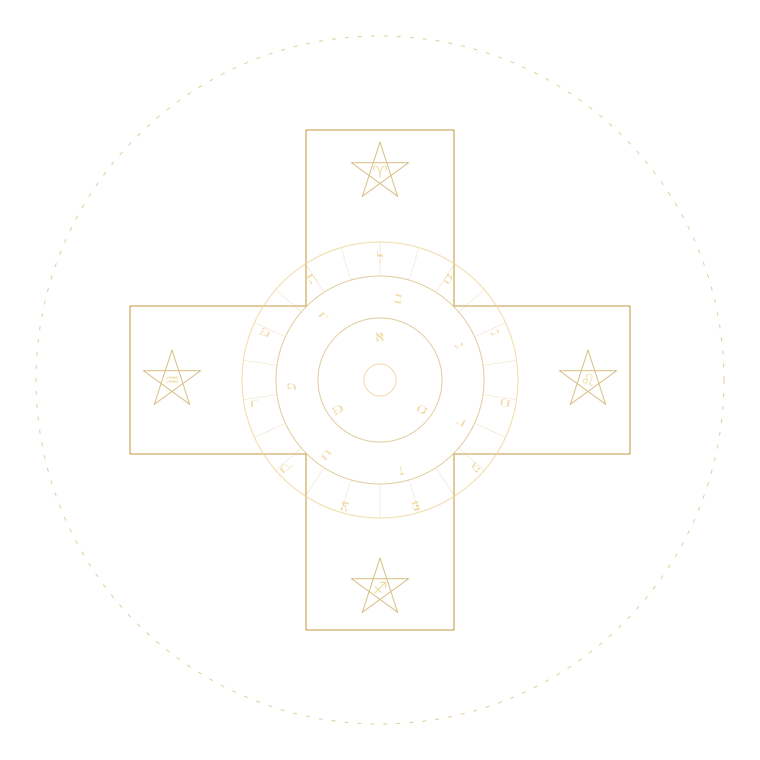

The Library
What this cabinet was built from, how it reads, what it refuses, and a caution worth reading before any of the practical pages.
How this cabinet reads
Three rules, applied to every page.
First: a claim keeps its author. Where a tradition asserts something about the world (that spirits have offices, that the etheric body exists, that a square of numbers affects an outcome), the text says whose claim it is and leaves it standing as a claim. No page here asserts these things in its own voice, and no page sneers at them either.
Second: the psychological reading is a method, not a verdict. Following Jung, this cabinet often reads a symbol as a statement about the psyche. That is fruitful, and it is not neutral: Steiner, Crowley and Blavatsky each rejected it, and each rejection is recorded in its own room. A reader is free to take the traditions literally.
Third: the ugly parts are not edited out. Nineteenth and early twentieth century esotericism carries race theory, empire and men who treated people badly. Where that is part of a source, this cabinet says so, declines to reproduce the material, and does not pretend a body of work is clean because parts of it are useful.
The shelf
Jung
- Two Essays on Analytical Psychology (Collected Works 7), the best entry point on persona, shadow and the personal against the collective.
- The Archetypes and the Collective Unconscious (CW 9i), including the mandala papers.
- Psychology and Alchemy (CW 12) and Mysterium Coniunctionis (CW 14), the alchemical reading in full.
- Memories, Dreams, Reflections, with the caveat that it is edited memoir.
- The Red Book (Liber Novus), the source of active imagination, published 2009.
- His foreword to the Wilhelm and Baynes I Ching, 1949.
The Book of Changes
- Richard Wilhelm, German translation 1923; Cary F. Baynes, English 1950, third edition 1967. The standard version in the West.
- Wilhelm's Lectures on the I Ching, for how he understood what he was doing.
- Richard John Lynn, The Classic of Changes (1994), the Wang Bi commentary, a corrective to Wilhelm's Confucian emphasis.
- Edward Shaughnessy on the Mawangdui manuscripts, for the oldest strata.
- Hellmut Wilhelm, Change and Heaven, Earth and Man in the Book of Changes, by Richard's son.
Steiner
- Theosophy (1904), the members of the human being.
- Knowledge of the Higher Worlds and Its Attainment (1904), the exercises.
- An Outline of Esoteric Science (1910), the full cosmology.
- The Philosophy of Freedom (1894), the pre occult philosophical work, and the one he wanted read first.
- Goethe's Metamorphosis of Plants, the root of his method.
- Helmut Zander's critical history, for the scholarship and the disputes.
Crowley and the Golden Dawn
- Crowley, Magick in Theory and Practice (Book Four, part three) and Liber 777.
- The Book of Thoth (1944), with Frieda Harris's paintings.
- The Book of Lies, for the aphoristic Crowley, and Liber Legis, for the received text.
- Israel Regardie, The Golden Dawn and The Middle Pillar, the rituals plus a psychotherapist's reading of them.
- Mathers and Crowley, The Goetia of the Lesser Key of Solomon, 1904.
- Agrippa, Three Books of Occult Philosophy, 1533, for the kameas and the hierarchies.
- Austin Osman Spare, The Book of Pleasure, 1913, for the sigil method.
Blavatsky and theosophy
- The Key to Theosophy (1889), the clearest statement.
- The Secret Doctrine (1888) and Isis Unveiled (1877).
- The Voice of the Silence (1889).
- The Mahatma Letters to A. P. Sinnett.
- The Society for Psychical Research report of 1885, and Vernon Harrison's 1986 critique of it, for the controversy in both directions.
Standing back from all of it
- Frances Yates, Giordano Bruno and the Hermetic Tradition, for how Renaissance magic actually worked.
- Wouter Hanegraaff, Esotericism and the Academy, the field's best account of itself.
- Alex Owen, The Place of Enchantment, on the Victorian occult revival.
- Marie Louise von Franz, Alchemy, the clearest Jungian expositor.
- Mircea Eliade on initiation, read with the later criticism of him in hand.
Terms that recur
- Archetype
- An inherited readiness to form images of a certain kind, not an inherited image.
- Astral
- In theosophy and magic, the plane or body of desire and imagination. In practice, the layer where symbols behave as if alive.
- Banishing
- The deliberate closing of a ritual frame. Psychologically, ending the session properly.
- Egregore
- A collective thought form, said to be sustained by a group's attention.
- Gematria
- Reading the numerical value of letters, and treating words of equal value as related.
- Individuation
- Jung's term for becoming the particular person one is, which includes the parts one would not have chosen.
- Kamea
- A planetary magic square, used as a grid for tracing sigils.
- Lamen
- A symbolic plate worn on the breast, declaring the authority under which one works.
- Numinous
- Rudolf Otto's word, adopted by Jung: the quality of an encounter that overwhelms and does not ask permission.
- Sephira
- One of the ten spheres of the Tree of Life. Plural sephiroth.
- Sigil
- A statement compressed into a figure until it can no longer be read.
- Synchronicity
- A meaningful coincidence with no causal link between its halves.
What this material can and cannot do
Everything in this cabinet is offered for study, reflection and craft. It is not medical, psychological, legal or financial advice, and nothing here is a treatment for anything.
- If you are in crisis, stop here and get help from a person. The imaginal practices on these pages are not for someone currently flooded, dissociating, not sleeping or in danger. Jung said so about active imagination, and the grimoires say so in their own vocabulary.
- Divination is a mirror for deliberation, not a substitute for it. A cast hexagram is a good way to find out what you already think. It is a bad way to decide about your health, your money or another person's life.
- Watch for inflation. The single most consistent warning across all five traditions is about the practitioner who becomes certain, chosen and unreachable. The antidotes are unglamorous: the written record, ordinary work, and people who are allowed to contradict you.
- Keep one foot in Malkuth. The kingdom, the feet, the body, the day. Every school here has a version of that instruction, which is a strong hint that everyone needed to be told.
This site does not collect anything you type. The oracle and the sigil workshop run entirely in your own browser, and nothing is stored or sent anywhere.
How this cabinet was made
Every plate, seal, mandala, hexagram and card on this site is drawn by the house in geometry and gold: no photographs, no stock illustration, no reproductions of copyrighted decks or manuscripts. The large plates are generated as line drawings from a script; the spirit seals and the sigils are drawn in your browser as you look at them, from the letters of a name or a sentence. The hexagram texts are close paraphrases of the Wilhelm reading rather than translations.
Liber 488 is a reading room. It has no order, no grades, no membership and nothing to sell.